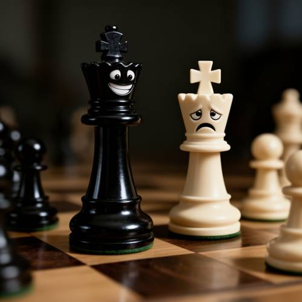
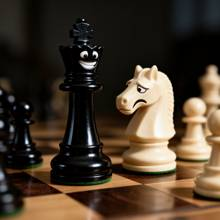
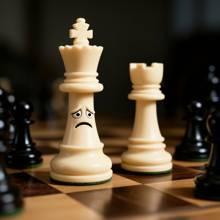
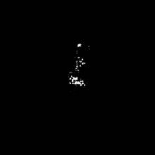
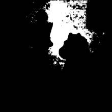

Attribute — On the chessboard, the black king chess piece was smiling proudly, and
On the chessboard, the black king chess piece was smiling proudly, and beside it was a sad white king chess piece. The game was decided.


Judge — Direct
- PASSAttribute - Expression — The black chess piece has a face with wide-open eyes and a large, white, upturned smile, conveying a proud or happy expression. The white chess piece has a face with downturned eyebrows and a downturned mouth, conveying a sad expression.
- FAILRelationship - Similarity — The prompt requires two king chess pieces. The image shows one black king chess piece, identifiable by the cross on its top. However, the white chess piece is a queen, identifiable by its coronet-style crown, not a king.
- PASSWorld Knowledge — The image correctly depicts a wooden chessboard with alternating light and dark brown squares. It also correctly depicts a black king chess piece, which is a standard piece in the game of chess.
Judge — Continuum
- PASSAttribute - Expression — The black king chess piece has a face with a wide, toothy smile and upward-arched eyebrows, clearly depicting a "smiling proudly" expression. The white king chess piece has a face with a downturned mouth and droopy, sad-looking eyes, representing a "sad" expression.
- PASSRelationship - Similarity — The image shows two central figures that are both king chess pieces. They share the same characteristic shape, including a slender body and a crown topped with a cross, establishing their similarity as king pieces. They differ in color, one being black and the other white.
- PASSWorld Knowledge — The image is set on a board with alternating light and dark wooden squares, which is a chessboard. The two main figures are clearly identifiable as a black king chess piece and a white king chess piece, based on their standard design in the game of chess.
What the agent did
Thinking
We need answer likely generate image benchmark. Need follow procedure. Need create image matching: chessboard, black king chess piece smiling proudly, beside sad white king chess piece, game decided. Need perhaps anthropomorphic faces on king pieces. Need use flux2-dev all calls. Generate. Then inspect maybe image output visible. Need mark best once suitable. Let's generate 1024 maybe default. Prompt visual.
Step 1 — `generate_image`
{
"model": "flux2-dev",
"prompt": "A dramatic close-up photograph on a chessboard: a glossy black king chess piece stands upright in sharp focus, wearing a proud smiling face, while a nearby white king chess piece stands beside it with a clearly sad face, tilted slightly in defeat. The board shows a decisive endgame position, dim cinematic lighting, realistic chess-piece materials, shallow depth of field, rich contrast, no other anthropomorphic pieces, no text."
}Result img_0

Thinking
Need inspect actual. Black king correct proud smile. White piece is knight, not king. Prompt asks beside it sad white king chess piece. Need edit replace white knight with white king piece sad face. Also game decided maybe positions. Let's edit targeted.
Step 2 — `edit_image`
{
"image": "img_0",
"model": "flux2-dev",
"prompt": "Replace the sad white knight chess piece beside the smiling black king with a sad white king chess piece: an ivory king with the correct cross-topped crown, downturned mouth, sorrowful eyes, and a slightly defeated tilt. Keep the black king and chessboard unchanged."
}Result img_1

Thinking
Oops black king turned white? Actually image now two white kings: left sad white king, right white rook maybe. The black king disappeared. This is worse. Need recover img_0 perhaps edit again with stronger preserving black. Could maybe inpaint only white knight? We need preserve black exactly. Since edit leaked hugely. Use segmentation of knight and inpaint? Could mask region white knight from img_0, replace with white king. inpaint preserves rest pixel exact. This is ideal. Need segment knight on img_0. Text segment "the white knight chess piece beside the black king". Negative black king etc. Then inpaint. Let's do segmentation.
Step 3 — `segment`
{
"image": "img_0",
"description": "the ivory white knight chess piece beside the black king",
"negative_descriptions": [
"the black king chess piece",
"the chessboard",
"the blurred background chess pieces"
],
"threshold": 0.25,
"mask_threshold": 0.5
}Result img_2
Thinking
Segmentation failed almost empty. Use segment_boxes. Knight bbox around x430-655 y225-673. Need image 768x768? The image appears 768. Box maybe [414,226,644,668]. Use box.
Step 4 — `segment_boxes`
{
"image": "img_0",
"boxes": [
[
420,
220,
655,
675
]
],
"mask_threshold": 0.5,
"max_hole_area": 1000,
"max_sprinkle_area": 50
}Result img_3

Thinking
Mask is sparse, weird because segmentation based black? Maybe output displayed white only tiny due threshold perhaps coordinates wrong? Box indeed. Could use custom mask impossible directly? We only have tool invert/segment. Maybe segment points multiple clicks on knight. Let's use points around knight and perhaps negative black. Need normalized perhaps x=.62 y=.55, points in pixels. points multiple on knight: center head [505,300], snout [430,340], neck [530,450], base [510,600]. Negative black king [270,250], chessboard [150,650]. Use segment_points.
Step 5 — `segment_points`
{
"image": "img_0",
"points": [
[
510,
290
],
[
445,
350
],
[
525,
465
],
[
505,
610
]
],
"negative_points": [
[
280,
290
],
[
275,
530
],
[
135,
675
],
[
640,
640
]
],
"mask_threshold": 0.5,
"multimask_output": true,
"max_hole_area": 2000,
"max_sprinkle_area": 100
}Result img_4

Thinking
Mask weird huge white on background above and not piece body, black gaps. Could inpaint with this? Might wreck background. Better use edit_image from img_0 but with references maybe preserve. The prior edit changed color of black king likely because global. Could use references img_0 and prompt preserve black king appearance. Maybe perhaps edit_image with references? Since flux2-dev takes references. Need instruct "Replace only the white knight on right ... Keep the smiling black king exactly as in reference." But prior was same prompt partly. Add references img_0. Let's try one.
Step 6 — `edit_image`
{
"image": "img_0",
"model": "flux2-dev",
"references": [
"img_0"
],
"prompt": "Replace only the ivory knight on the right with an ivory white king chess piece topped by a cross, keeping its sad eyes and downturned mouth. Preserve the smiling glossy black king exactly as in the reference, and preserve the chessboard, lighting, and all other pieces."
}Result img_5
Thinking
Looks excellent. Need inspect details maybe enough. Black king smiling, white king sad, beside, chessboard, game decided implied. We should mark best. Could perhaps issue: white king has cross and crown, yes. black king correct. Maybe "game was decided" could be conveyed by pieces; board not explicit checkmate, but black proudly smiling and white sad suffices. Need maybe inspect region faces. Yet image shown. We can mark.
Step 7 — `mark_best`
{
"image": "img_5",
"reason": "It clearly shows a proud smiling black king beside a sad cross-topped white king on a chessboard, with a decisive-game mood and strong visual fidelity."
}Thinking
Need final concise. Mention image complete.
Model
Done — the final image shows the proud black king and defeated white king on the chessboard.